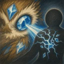

Matang Mapanuri
Pinipili ang kalaban sa loob ng 5 tile na may pinakamalaking natanggap na damage sa labang ito. Binabawasan nang 25% ang Armor at Magic Resist ng target nang 4 segundo, at nagdudulot ng magic damage na katumbas ng 370% ng Magic Power.